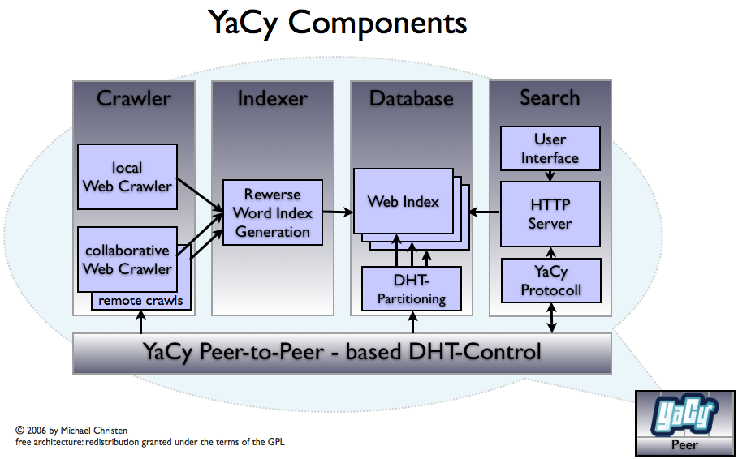
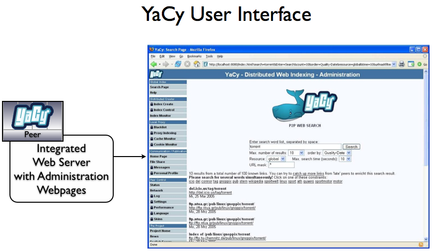
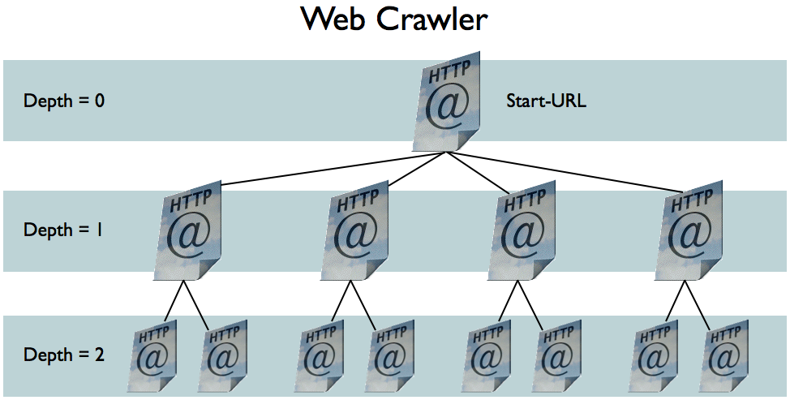
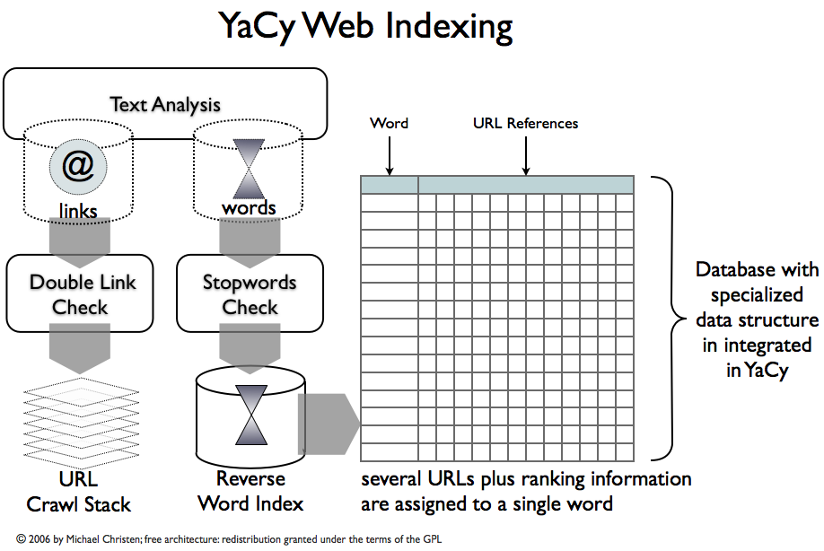

Web Search Technology

YaCy consists mainly of four parts:
a web crawler, an indexer,
a built-in database engine and
the p2p index exchange protocol, based on http.
The YaCy search engine can be accessed through the built-in http server.
All parts of this architecture are included in the YaCy distribution.

YaCy has a built-in http server,
and the user interface is realized as web pages on the own web server.
A search request to YaCy is done inside your web browser.

A web search engine can only search web pages that had been crawled, which means that
all pages of subpages (and so on) of a start point had been loaded. YaCy has an integrated web crawler.

Before a huge number of web pages can be searched efficiently, the pages must be indexed.
This is a very difficult process which runs inside YaCy without any user action.
After indexing of web pages a single YaCy installation is able to provide search results
from more that 10 million of web pages efficiently.
|